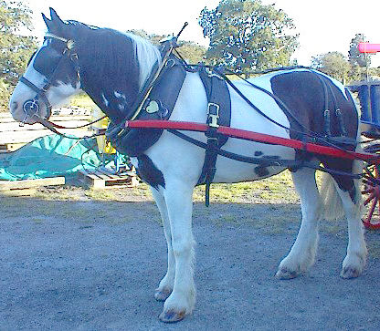

Comment Mait' Jean s'y prins pour faithe marchi sa vieille Quédole

Ch'est un j'va

|
Mait' Jean Philippe, du haut d'l'Eta d'St.-Ou, ieunne des dernièthes maisons du côtai du Pûlet; voulant tàchi d'faithe tchiques sous; san bidet qu'menchait à s'faithe vi, il avait 'tai pus d'une génétheation dans la famille, et y n'est à savé combein d'vrai qu'il avait tchéthiet; notre houmme voulant tâchi, coumme j'avons dit, d'faithe tchiques sous pour en acaté un pus jeunne, l'idaie l'y veint d'allé en ville acaté du fain par le tounné, pour lé d'bité dans sans vaisiné, criant d'faithe san profit d'sus, ch'tai une année de sécrèche, et y n'y'avait pon d'deuxième récolte, et la prumièthe n'étai pon bein forte sus les rotchiers alentou d'sa maison; y mins le dergni fagot qui l'y restait dans san tchéthio, et le vla en route pour la ville, mais l'vier bidet qui n'avait pon veu d'fain pour des mais et en sentait en drièthe de li, ne voulait pon marchi, l'idaie veint au buonne houmme Philippe (et coumme il avait preins une longue frouque, car y criait en prendre une buonne cherge) d'amathé le fagot d'fain au but d'la frouque et d'la lanchi à tchiques pids en d'vant d'san bidet; chein qui fît, et vraienment, le vier bidet en vint coumme s'il avait 'tai êlectrizai et preins l'galop coumme s'il avait l'mord-es-dents cherchant tout l'temps à attrappé l'fagot d'fain. si yiavait yieu un Policeman sus la route Mait' Jean étheat 'tait traduit d'vant le Juge Vaudin pour FURIOUS DRIVING, car il allait quédaine au grand danghi des p'tits esfants. ch'tait pas tant mal pensai; qu'est quou z'en crihis? Notre ammin Mait' Jean s'en tenait l'ventre à deux mains de peux d'en busté d'rithe, en pensant d'avé jouai sans bidet.
Viyiz étout: